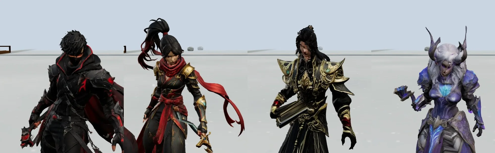
Yeni Nesil Karakterler
Bütün sınıflar yüksek ayrıntılı modeller, gerçekçi ışık ve keskin dokularla yenilendi.
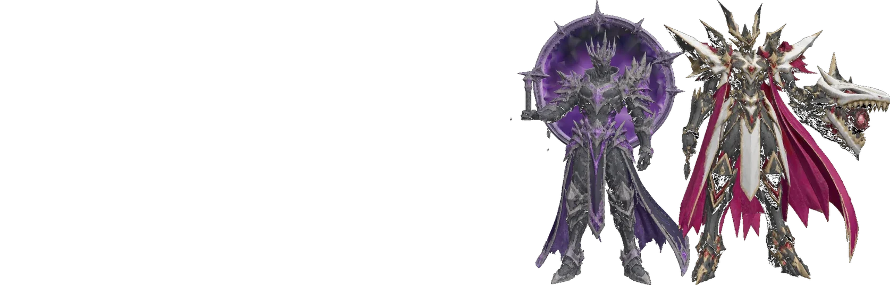
Metin2 ruhunu taşıyan yeni nesil 3D MMORPG. İndirmeden, tarayıcıda ve telefonda; tamamen ücretsiz.
Bozkırın kılıç ustasından ataların ruhlarıyla konuşan büyücüye; her sınıfın kendi becerileri, dövüş tarzı ve evrimleşen zırhları var.
Bozkırın kılıç ustası. Ön safta dövüşür; yüksek can ve savunma, ağır kılıç darbeleri.
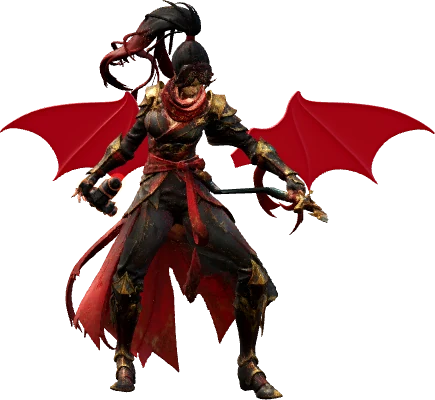
Hızlı ve çevik baskıncı. Hafif kılıçla seri ve kritik vuruşlar.
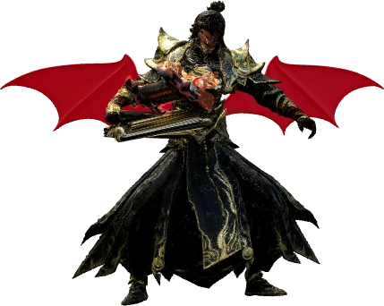
Kara alevi kılıçla birleştirir. Yıkıcı ama kırılgan.
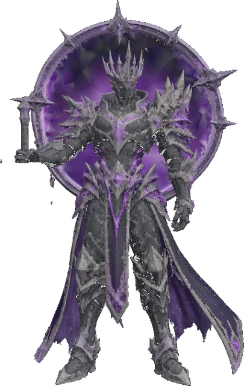
Ataların ruhlarıyla konuşan büyücü. İyileştirir ve büyü yapar; grubun can damarı.
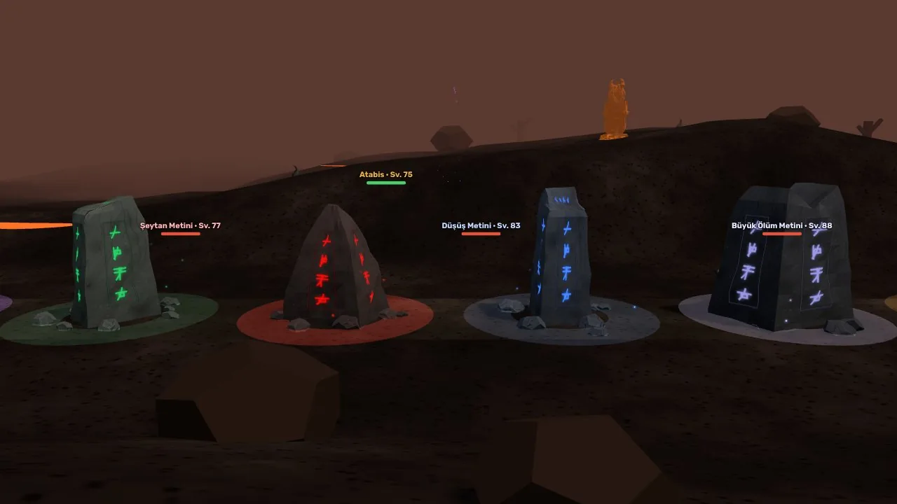
Haritaya dağılmış dev rün taşlarını kır; her biri tecrübe ve ganimet yağdırır.
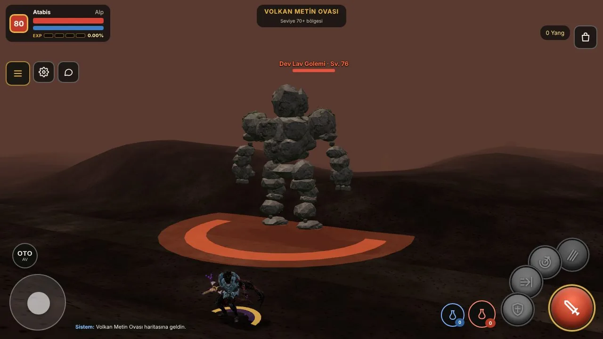
Grubunu topla, devlerin karşısına çık. Her ölümde 1.000.000 Yang ve bol tecrübe.
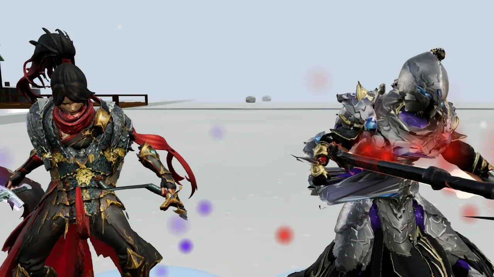
Eşyanı demircide +9'a yükselt, sonra evrimleştir: daha güçlü ve tamamen yeni görünümlü bir eşyaya dönüşsün.
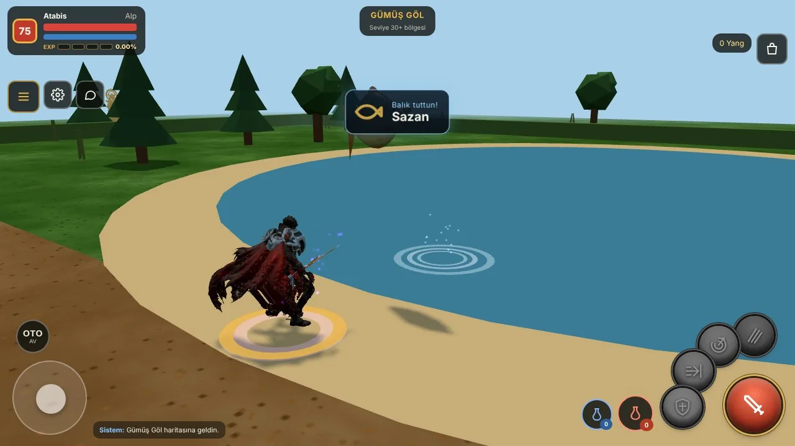
Savaştan yorulunca Gümüş Göl'e olta at. Her balığın kendi görünüşü, içinden inci ve sürprizler çıkar.
Loncanı kur, krallık savaşlarında ve düellolarda adını duyur.
At ve Savaş Kaplanı'na bin; yanında savaşan petlerini topla.
Işık ve yarasa kanatları, gösterişli kostümlerle öne çık.
Oyuncu pazarında al, sat, takas et; servetini büyüt.
Atabis Köyü'nden Lanetli Harabeler'e uzanan yol; her durakta daha güçlü taşlar ve devler.
Oyuna Başla'ya bas, kullanıcı adı ve şifreyle saniyeler içinde kayıt ol. İndirme yok.
Şövalye, Suikastçı, Lanetli ya da Büyücü. Krallığını seç ve adını yaz.
+9 silah, zırh, kolye, küpe, ayakkabı, at ve ışınlanma yüzüğüyle doğrudan maceraya başla.

Bütün sınıflar yüksek ayrıntılı modeller, gerçekçi ışık ve keskin dokularla yenilendi.
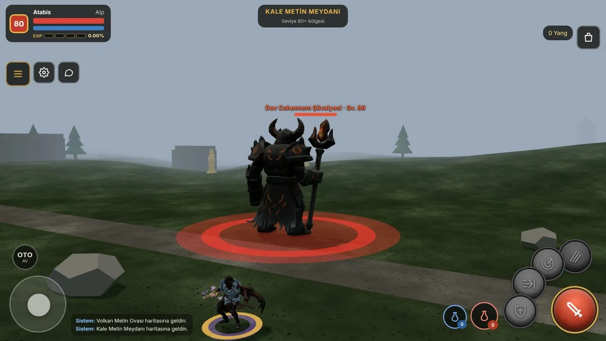
Üç metin haritasında yeni devler: her ölümde 1M Yang, yaprak ve bol tecrübe.
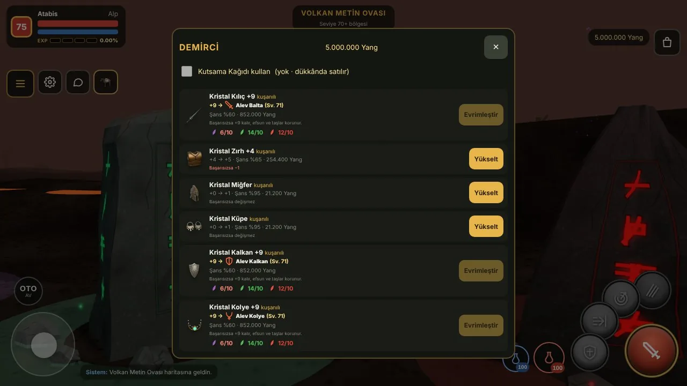
Metin2 tarzı +9 evrim, inci dönüştürme, başlangıç rehberi ve hızlı gelişim.
Kılıcını kuşan, loncanı topla ve Atabis'in en güçlüsü ol. Ücretsiz, tarayıcıda, hemen şimdi.
⚔ Oyuna Başla